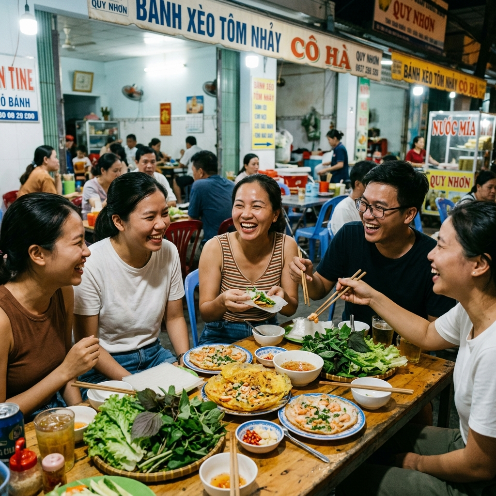

Xứ Nẫu Bình Định không chỉ quyến rũ lòng người bởi biển xanh cát trắng mà còn bởi một nền văn hóa ẩm thực đậm đà, mộc mạc và vô cùng độc đáo. Hãy cùng khám phá danh sách các món **đặc sản Quy Nhơn Bình Định trứ danh** kèm hình ảnh chuẩn vị chuẩn hình dưới đây!
Đánh giá chi tiết các đặc sản Quy Nhơn Bình Định chuẩn vị
Bánh Cuốn Tây Sơn Khổng Lồ
Cảm nhận thực tế: Món ăn danh bất hư truyền của vùng đất võ Tây Sơn. Một cuốn bánh tráng siêu to khổng lồ cuốn trọn thịt heo nướng lụi thơm nức, chả ram tôm giòn rụm, trứng luộc, đậu hũ chiên vàng và đủ loại rau thơm. Chấm đẫm vào chén mắm nêm đậm đà xay cùng đậu phộng cay bùi cực kỳ gây nghiện!
Giá từ 35.000đ – 50.000đ/cuốnMón Dé Tây Sơn Bình Định
Cảm nhận thực tế: Món lẩu/canh lòng bò hoặc lòng dê độc nhất vô nhị của xứ võ Tây Sơn. Nước canh được nấu cùng lá khổ sâm có vị đắng thanh dịu nhẹ lúc đầu nhưng hậu vị ngọt đậm đà nơi cổ họng. Ăn nóng kèm bánh tráng nướng mè giòn rụm và dĩa rau sống tươi xanh độc đáo không nơi nào có.
Giá từ 60.000đ – 90.000đ/tô lẩuBún Khô Bồng Sơn (Bún Trộn)
Cảm nhận thực tế: Loại bún gạo khô đặc sản lừng danh của thị xã Hoài Nhơn. Sợi bún luộc vừa chín tới dẻo tơi, trộn cùng thịt heo băm, chả cá chiên, đậu phộng rang giòn và hành phi thơm lừng. Chan thêm thìa nước mắm tỏi ớt chua ngọt ăn hoài không biết chán.
Giá từ 30.000đ – 40.000đ/tôRượu Bàu Đá Truyền Thống
Cảm nhận thực tế: "Đệ nhất đao tửu" của đất Nam Bộ. Rượu được chưng cất từ gạo tẻ ngon nung thủ công kết hợp nguồn nước giếng đá cổ truyền tại làng Bàu Đá. Rượu nồng độ cao (50-52 độ), khi rót sủi bọt tăm êm dịu, uống vào cay nóng nồng nàn nhưng tuyệt đối không đau đầu.
Giá từ 80.000đ – 120.000đ/lítBánh Xèo Tôm Nhảy
Cảm nhận thực tế: Vỏ bánh mỏng đúc giòn rụm màu vàng nghệ ôm lấy những con tôm đất đỏ tươi còn nhảy tanh tách khi đúc. Cuốn bánh tráng với rau cải mầm, xoài xanh rồi chấm đẫm vào chén mắm xoài cay nồng kích thích vị giác.
Giá từ 25.000đ – 40.000đ/cáiBánh Hỏi Cháo Lòng
Cảm nhận thực tế: Bữa ăn sáng truyền thống quốc dân. Bánh hỏi rưới hẹ phi thơm ăn kèm đĩa lòng luộc (tim, gan, dồi) nóng hổi chấm mắm chua ngọt, húp thêm chén cháo lòng loãng ấm bụng.
Giá từ 30.000đ – 45.000đ/phầnTré Rơm Bình Định
Cảm nhận thực tế: Mồi nhậu quốc dân xứ Nẫu. Tai heo luộc trộn thính gạo, mè, tỏi ớt, riềng rồi bó chặt trong rơm khô. Tré chua giòn sần sật cay nồng đầu lưỡi.
Giá từ 35.000đ/bóBánh Ít Lá Gai
Cảm nhận thực tế: Vỏ bánh dẻo quánh xanh đen từ lá gai rừng, nhân dừa nạo xào đường ngọt lịm thơm bùi thích hợp mua về làm quà.
Giá từ 5.000đ/cái
💬 Đánh giá từ thực khách
Nhóm Bạn Chị Phương Thảo (Đà Nẵng)
"Nhóm mình theo chỉ dẫn của trang web đến ăn thử Bánh xèo tôm nhảy và Bánh cuốn Tây Sơn, món nào cũng chuẩn vị miền Trung ngon tuyệt vời! Giá cả mộc mạc đúng giá địa phương không sợ bị chặt chém."
